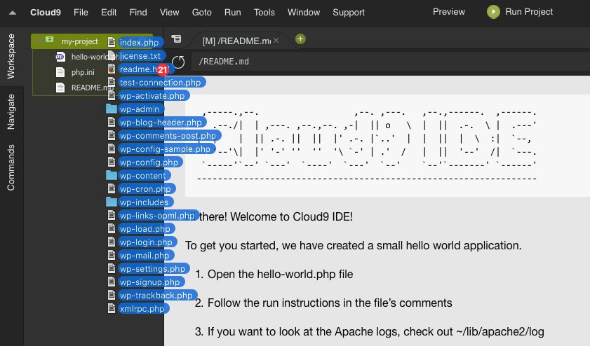

Getting a local WordPress installation onto cloud9 can be pretty useful for sharing your progress.
If you start with a fresh WordPress installation on cloud9, it can work, but its a pain. Even after using the import tool, you wind up having to upload theme & plugin files seperately, re-activate them, reconfigure settings on plugins, and in my case redo the widgets so they show up in my sidebar.
Wouldn’t it be easier to just drag all the local WordPress files into cloud9? I think the answer is yes!
Here’s my checklist:
1) Install Php / Apache / MySql on Cloud9
Log in to your cloud9 account (or create one) and click “Create a new workspace”. Choose “php/apache/mySql”.
2) Drag All Your Local WordPress Files Into the Newly Created Folder in the Workspace

3) Install PHPMyAdmin on Cloud9
In the cloud9 terminal type:
|
1 |
phpmyadmin-ctl install |
Then follow the link provided to open phpmyadmin. More
4) Export local database to .sql file
Open phpmyadmin for your local installation and export the WordPress database tables to an sql file.
5) Import .sql File to Cloud9 Database
In your cloud9 phpmyadmin, click the c9 database, then the “Import” tab. find the sql file from the previous step and upload it.
6) Change Site URL in Options Table
You should now have all your WordPress tables available in the c9 database. Open the ‘wp_options’ table (your prefix may vary slightly). Right at the top of the table, you should see 2 entries for “site_url” and “home”. Change the option_value in both of these to reflect the cloud9 site url. it will be something like: https://workspacename-username.c9users.io
Its the URL you see in the terminal when you hit “Run Project” in cloud9.
7) Change wp-config.php to Allow DB Connections
In cloud9, change the database connection variables in “wp-config.php” like so:
|
1 2 3 4 5 6 7 |
define('DB_NAME', 'c9'); define('DB_USER', 'cloud9username'); //use the name you signed into phpmyadmin with define('DB_PASSWORD', ''); //should be empty string (same as phpmyadmin password) define('DB_HOST', '127.0.0.1:3306'); |
8) Fix Permalinks
At this point the index page of the site ought to be working, but you will likely have trouble navigating to other pages. This is because the .htaccess file is broken and permalinks are not working.
In WordPress Admin Panel, go to Settings > Permalinks. Click “Plain” + “Save changes”. Then click back to the permalink setting you had previously and click “Save changes”. This will fix your .htaccess file.
9) Fix Image Sources
You can now click around to different pages and check to see if images in your posts are loading properly. If they aren’t do this:
click the ‘c9’ database in your cloud9 phpMyAdmin. Click the SQL tab. Enter the following SQL, substituting the URLs so that references to the old URL are replaced with the new one:
|
1 |
UPDATE wp_posts SET post_content=(REPLACE (post_content, 'oldsite.com','newsite-cloud9username.c9users.io')) |
AAAaaand you should be up and running! I wish i could find an even easier way, but you can breeze through the steps pretty quickly once you’ve done it before.